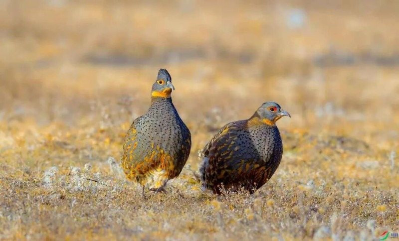
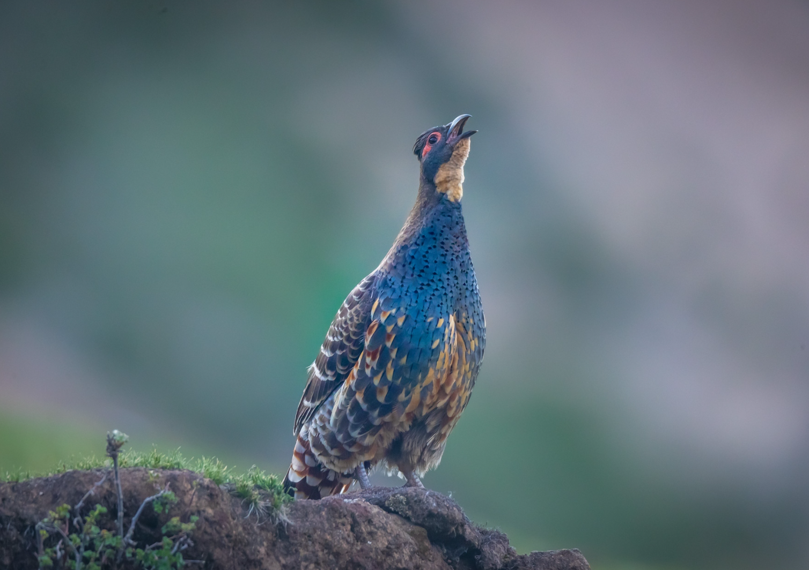
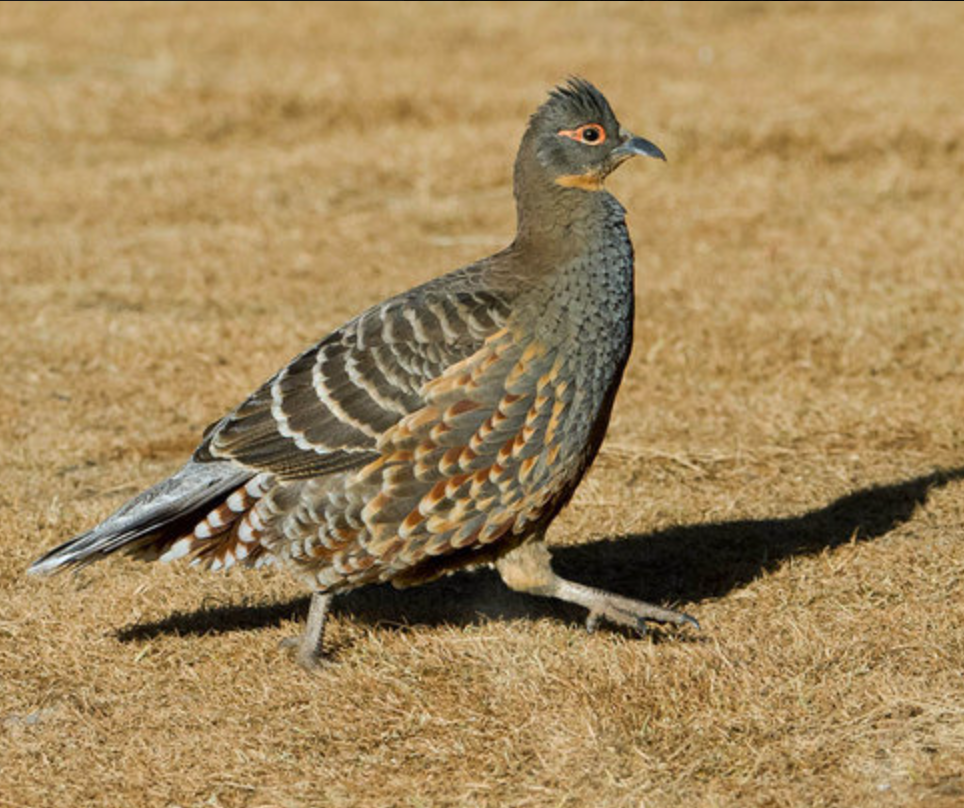
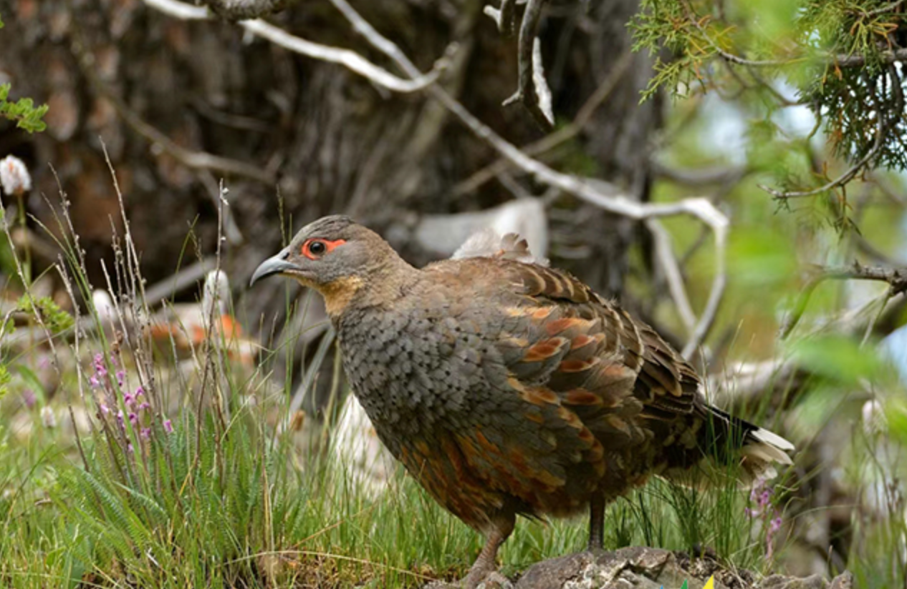

羽翼守望者


雉鹑属（Tetraophasis）为雉科下的一个属，仅2种，均分布于中国西南部山地。体型约30-40cm，羽毛以灰褐、栗色为主，具纵纹，隐蔽性极强。栖息于海拔3000-4500m的针叶林、灌丛和草甸，以植物根茎、种子、昆虫为食。
繁殖期筑巢于地面草丛或灌丛下，每窝产4-8枚卵。生性胆小，遇惊时迅速奔跑。由于栖息地破坏和狩猎，数量呈下降趋势，被列为易危物种。
📖 参考：点此处 查看国际鸟盟资料。

黄喉雉鹑体长约35-40cm，上体灰褐色，具黑纹，喉部黄色，胸腹栗色。分布于中国西南部（四川、云南、西藏）的高山灌丛。
以植物根、种子、昆虫为食，活动隐蔽。繁殖期5-7月，营巢于地面。因栖息地破坏，种群稀少，被列为易危。

四川雉鹑体长约30-35cm，喉部红色，上体灰褐，腹栗色。仅分布于中国四川西部和云南西北部的高山灌丛。
以植物嫩芽、种子为食，常集群活动。繁殖期5-6月，每窝产4-6枚卵。因分布狭窄，更易受威胁，被列为易危。
📖 参考：点此处 查看 IUCN 评估。

雉鹑属为中国特有珍稀鸟类，保护高山灌丛和针叶林、加强反盗猎是保护关键。公众可通过支持保护区建设、参与物种监测来帮助它们。
📖 了解更多：点此处 查看中国林草局。